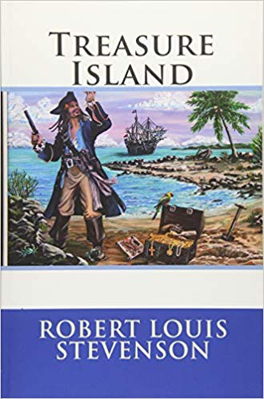
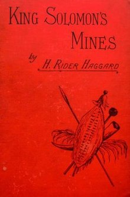
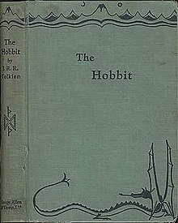
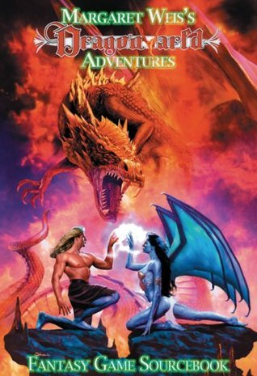

Book Review

Title: Treasure Island
Author: Robert Louis Stevenson
Summary
Jim Hawkins is a young boy who lives at his parents’ inn, the Admiral
Benbow, near Bristol, England, in the eighteenth century. An old sea
captain named Billy Bones dies in the inn after being presented with a
black spot, or official pirate verdict of guilt or judgment. Jim is
stirred to action by the spot and its mysterious, accurate portent of
Billy’s death. Hastily, Jim and his mother unlock Billy’s sea chest,
finding a logbook and map inside. Hearing steps outside, they leave with
the documents before Billy’s pursuers ransack the inn. Jim realizes that
the contents he has snatched from the sea chest must be valuable, so he
takes one of the documents he has found to some local acquaintances, Dr.
Livesey and Squire Trelawney. Excited, they recognize it as a map for a
huge treasure that the infamous pirate Captain Flint has buried on a
distant island. Trelawney immediately starts planning an expedition.
Naïve in his negotiations to outfit his ship, the Hispaniola, Trelawney
is tricked into hiring one of Flint’s former mates, Long John Silver,
and many of Flint’s crew. Only the captain, Smollett, is trustworthy.
The ship sets sail for Treasure Island with nothing amiss, until Jim
overhears Silver’s plans for mutiny. Jim tells the captain about Silver
and the rest of the rebellious crew.
Rating
⭐⭐⭐⭐ ☆ (4/5)
Book Review

Title: King Solomon's Mines
Author: H. Rider Haggard
Summary
Allan Quatermain, an adventurer and white hunter based in the African
city of Durban,[N 1] is approached by aristocrat Sir Henry Curtis and
his friend Captain Good, seeking his help finding Sir Henry's brother,
who was last seen travelling north into the unexplored interior on a
quest for the fabled King Solomon's Mines. Quatermain has a map
purporting to lead to the mines, but had never taken it seriously. He
agrees to lead an expedition in return for a share of the treasure, or a
stipend for his son if he is killed along the way. He has little hope
they will return alive, but reasons that he has already outlived most
people in his profession, so dying in this manner at least ensures his
son will be provided for. They also take along a native, Umbopa, who
seems more regal and well-spoken than most porters of his class, but who
is anxious to join the party. Travelling by oxcart, they reach the edge
of a desert, but not before a hunt in which a wounded elephant claims
the life of a servant. They continue on foot across the desert, almost
dying of thirst before finding the oasis shown halfway across on the
map. Reaching a mountain range called Suliman Berg, they climb a peak
(one of "Sheba's Breasts"), enter a cave and find the frozen corpse of
José Silvestre,[N 2] the 16th-century Portuguese explorer who drew the
map in his own blood. That night, another servant dies from the cold,
and they leave his body next to Silvestra's. They cross the mountains
into Kukuanaland, a raised valley, lush and green. The inhabitants have
a well-organised army and society and speak an ancient dialect of
IsiZulu. Kukuanaland's capital is Loo, the destination of a road from
ancient times. The city is dominated by a central royal kraal. A party
of Kukuana warriors are about to kill them when Captain Good nervously
fidgets with his false teeth, making the Kukuanas recoil in fear.
Thereafter, to protect themselves, they style themselves "white men from
the stars"—sorcerer-gods—and are required to give regular proof of their
divinity, considerably straining both their nerves and their ingenuity.
They are brought before King Twala, a ruthless and violent leader. He
came to power years before by murdering his brother, the previous king,
and driving his brother's wife and infant son, Ignosi, out into the
desert to die. Twala's rule is unchallenged. Gagool, an impossibly
ancient hag, is his chief advisor. She roots out any potential
opposition by ordering regular witch hunts and murdering without trial
all those identified as traitors. When she singles out Umbopa for this
fate, it takes all of Quatermain's skill to save his life.
Rating
⭐⭐⭐ ☆☆ (3/5)
Book Review

Title: The Hobbit
Author: J. R. R. Tolkien
Summary
The evolution and maturation of the protagonist, Bilbo Baggins, is
central to the story. This journey of maturation, where Bilbo gains a
clear sense of identity and confidence in the outside world, may be seen
in psychological terms as a Bildungsroman rather than a traditional
quest.[81] The Jungian concept of individuation is also reflected
through this theme of growing maturity and capability, with the author
contrasting Bilbo's personal growth against the arrested development of
the dwarves.[82] Thus, while Gandalf exerts a parental influence over
Bilbo early on, it is Bilbo who gradually takes over leadership of the
party, a fact the dwarves could not bear to acknowledge.[83] The
analogue of the "underworld" and the hero returning from it with a boon
(such as the ring, or Elvish blades) that benefits his society is seen
to fit the mythic archetypes regarding initiation and male coming-of-age
as described by Joseph Campbell.[51] Chance compares the development and
growth of Bilbo against other characters to the concepts of just
kingship versus sinful kingship derived from the Ancrene Wisse (which
Tolkien had written on in 1929), and a Christian understanding of
Beowulf.[84] Shippey comments that Bilbo is nothing like a king, and
that Chance's talk of "types" just muddies the waters, though he agrees
with her that there are "self-images of Tolkien" throughout his fiction;
and she is right, too, in seeing Middle-earth as a balance between
creativity and scholarship, "Germanic past and Christian present".[85]
The overcoming of greed and selfishness has been seen as the central
moral of the story.[86] Whilst greed is a recurring theme in the novel,
with many of the episodes stemming from one or more of the characters'
simple desire for food (be it trolls eating dwarves or dwarves eating
Wood-elf fare) or a desire for beautiful objects, such as gold and
jewels,[87] it is only by the Arkenstone's influence upon Thorin that
greed, and its attendant vices "coveting" and "malignancy", come fully
to the fore in the story and provide the moral crux of the tale. Bilbo
steals the Arkenstone—a most ancient relic of the dwarves—and attempts
to ransom it to Thorin for peace. However, Thorin turns on the Hobbit as
a traitor, disregarding all the promises and "at your services" he had
previously bestowed.[88] In the end Bilbo gives up the precious stone
and most of his share of the treasure to help those in greater need.
Tolkien also explores the motif of jewels that inspire intense greed
that corrupts those who covet them in the Silmarillion, and there are
connections between the words "Arkenstone" and "Silmaril" in Tolkien's
invented etymologies.[89] The Hobbit employs themes of animism. An
important concept in anthropology and child development, animism is the
idea that all things—including inanimate objects and natural events,
such as storms or purses, as well as living things like animals and
plants—possess human-like intelligence. John D. Rateliff calls this the
"Doctor Dolittle Theme" in The History of The Hobbit, and cites the
multitude of talking animals as indicative of this theme. These sapient
beings include ravens, a thrush, spiders and the dragon Smaug, alongside
the anthropomorphic goblins and elves. Patrick Curry notes that animism
is also found in Tolkien's other works, and mentions the "roots of
mountains" and "feet of trees" in The Hobbit as a linguistic shifting in
level from the inanimate to animate.[90] Tolkien saw the idea of animism
as closely linked to the emergence of human language and myth: "...The
first men to talk of 'trees and stars' saw things very differently. To
them, the world was alive with mythological beings... To them the whole
of creation was 'myth-woven and elf-patterned'."[91] Interpretation
Rating
⭐⭐⭐⭐⭐
(5/5)
Book Review

Title: Adventures of Huckleberry Finn
Author: Mark Twain
Summary
Adventures of Huckleberry Finn explores themes of race and identity;
what it means to be free and civilized; and the ideas of humanity and
social responsibility in the changing landscape of America. A complexity
exists concerning Jim's character. While some scholars point out that
Jim is good-hearted and moral, and he is not unintelligent (in contrast
to several of the more negatively depicted white characters), others
have criticized the novel as racist, citing the use of the word "nigger"
and emphasizing the stereotypically "comic" treatment of Jim's lack of
education, superstition and ignorance. This argument is supported by
incidents early in the novel where Huck deliberately "tricks" Jim,
taking advantage of his gullibility and Jim still remains loyal to
him.[9][10] But this novel is also Huck's 'coming of age' story where he
overcomes his initial biases and forms a deeper bond with Jim.
Throughout the story, Huck is in moral conflict with the received values
of the society in which he lives. Huck is unable consciously to rebut
those values even in his thoughts but he makes a moral choice based on
his own valuation of Jim's friendship and human worth, a decision in
direct opposition to the things he has been taught. Twain, in his
lecture notes, proposes that "a sound heart is a surer guide than an
ill-trained conscience" and goes on to describe the novel as "a book of
mine where a sound heart and a deformed conscience come into collision
and conscience suffers defeat".[11] To highlight the hypocrisy required
to condone slavery within an ostensibly moral system, Twain has Huck's
father enslave his son, isolate him and beat him. When Huck escapes, he
immediately encounters Jim "illegally" doing the same thing. The
treatments both of them receive are radically different, especially in
an encounter with Mrs. Judith Loftus who takes pity on who she presumes
to be a runaway apprentice, Huck, yet boasts about her husband sending
the hounds after a runaway slave, Jim.[12] Some scholars discuss Huck's
own character, and the novel itself, in the context of its relation to
African-American culture as a whole. John Alberti quotes Shelley Fisher
Fishkin, who writes in her 1990s book Was Huck Black?: Mark Twain and
African-American Voices, "by limiting their field of inquiry to the
periphery," white scholars "have missed the ways in which
African-American voices shaped Twain's creative imagination at its
core." It is suggested that the character of Huckleberry Finn
illustrates the correlation, and even interrelatedness, between white
and Black culture in the United States
Rating
⭐⭐⭐⭐
☆ (4/5)
Book Review

Title: Dragonvarld
Author: Margaret Weis
Summary
Master of Dragons picks up where The Dragon's Son left off; Marcus and
Evelina are escaping Dragonkeep down the river while Ven remains in the
city to heal and deal with Grald. Draconas must also hide since he now
knows that Anora is the traitor of the Dragon Parliament. He trolls the
city in the guise of an innocent while gathering information to assist
Ven and Marcus in bringing down the unholy trio of dragon traitors.
Marcus is kept busy evading Evelina's plots while Ven finds more
siblings - Grald's children from his own dragon-magic bearing women. He
had been keeping the magically powerful and sane children segregated
from the general population of Dragonkeep while training them into a
powerful army the likes of which Dragonvarld has never seen before.
After what he felt was his 'success' with engendering Ven, Grald
starting making more half-breed children and teaching them about dragon
superiority. His intentions are to make Ven his next human host and
Marcus has to help Ven fight him off in a battle that kills Grald. Ven
leads his half-dragon siblings to refuge in Seth while Draconas attempts
to have the dragon Parliament band together to stop Anora and Maristara.
He fails and Parliament dissolves in disarray. Maristara leads the army
of Dragonkeep against Idlyswylde while Anora infiltrates
Ramsgate-on-Aston (the capital city) to destroy the new cannons. She had
taken the form of Marcus' betrothed Lady Izabelle which set Evelina to
jealous plotting, and snared Marcus' mind and magic to keep him from
interfering. Dragon fights dragon to attack and defend the humans.
Maristara and Anora die in their separate battles when Seth's warriors
and priestesses ride to the rescue. Evelina is rewarded for her plots
with banishment to a distant convent while Marcus and Ven start building
their lives anew.
Rating
⭐⭐⭐⭐
☆ (4/5)